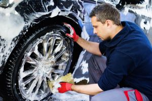
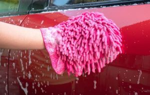

Wash and Wheels
Whether you are getting a full 2-step paint correction or a simple wash and sealant, an exterior wash of the paint and wheels is the first thing for any detailer to do. With any wash, you will always start with the wheels and then move to the paintwork. Detailers use this as good practice, as this way the detailer is ensuring that none of the dirt from the wheels get splashed on to the freshly cleaned paint.
Wheels and Tires
Wheels and tires are the first part of any detail. The first thing to do is ensure that the detailer you are working with has a good wheel cleaner, tire cleaner, all-purpose cleaner, along with all the various brushes that might be needed in this step. One thing to make sure to avoid is using any cleaner that is not pH-neutral on raw aluminum or any raw finish wheels. This will cause staining and will require aluminum polishing to remove. The next step is to clean the tire. If you ever noticed that the tires on your car turn brown, you might wonder why that is? It is called anti-ozonate and it is a chemical released by the tire to protect the side-wall of the tires. However the brown does not look very appealing, so cleaning this will help tremendously of the overall look to the car. However after cleaning the anti-ozonate from the tire, you must put a tire dressing on the side-wall to prevent dry-rotting and protect the tire just as the anti-ozonate does, while providing a deep, dark, clean look to the wheels and tires. Another extra step that is good practice is to clean the wheel wells and if they are plastic, to apply a plastic trim dressing to protect the plastic as well as help keep that plastic clean.
Wash and Decontamination
When washing a vehicle, it is extremely important to constantly rinse the wash mitt when possible in order to prevent scratches from appearing on the vehicle. When you use a microfiber wash mitt, the fibers trap dirt in themselves as you wash the vehicle. This is why it is important to constantly clean out your wash mitt. The 2-bucket method is a standard for detailing in todays inudstry and it works by having one bucket to rinse the dirt out of the wash mitt, and a second bucket with pH-neutral car soap to provide lubrication and cleaning power to the freshly rinsed wash mitt. Another important step is to decontaminate the vehicle. A detailer will do so by using a iron-decon to disolve imbedded iron particles in the paintwork, and a claybar to remove any other road grime that has embedded into the paintwork. This step is crutial as it will keep dirt out of polishing pads when performing paint correction, but it also removes all the embeded particles before you apply protection that would otherwise lock in that dirt below itself.